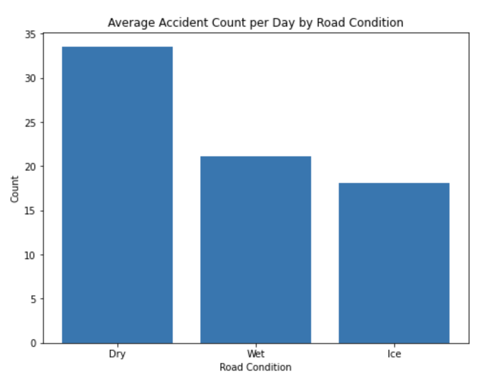
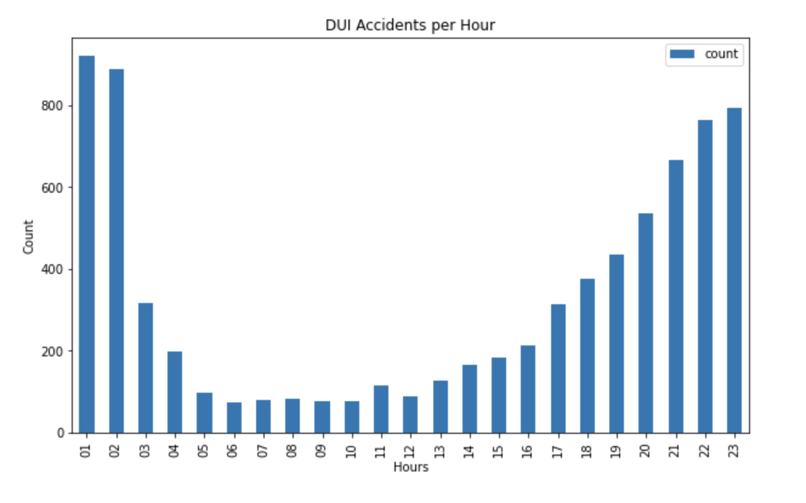

Under what circumstances are accidents more likely to occur?
Traffic collisions are one of the most pressing problems facing the world,
as they result in numerous deaths, injuries, and fatalities each year, as
well as significant economic losses. With the help of data analysis,
the question “Under what circumstances are traffic accidents more
likely to occur?” will be explored and answered.
To do so, historic data from the city of Seattle is used from the years 2004
to the end of 2020. Different data visualizations are used to present the variant
results that were explored and to highlight key findings.
This analysis is designated for the healthcare system, furthermore the four
main hospitals that have ER’s (Emergency Room) in Seattle. The analysis is
done to explore how different circumstances and different time periods can
influence the severity of an accident and how the hospitals can be better
prepared when those severity levels occur.
ACCIDENTS DURING DIFFERENT TIME PERIODS

Figure 1
To get an better idea on when most accidents are happening, it was decided to
start by looking at the different time periods over the years, it is interesting
to see on Figure 1, that traffic accidents have been declining over the years. Where there
was a spike in 2015, but then it went delining again, accidents went from over 15.000 per
year to less than 12.000.
One might think that traffic accidents tend to happen more in wintertime rather than summertime.
However, Figure 2 shows otherwise. By displaying the accident count in a
heatmap, the results show that the distribution over the months of the year.
The months are quite similar, but from the graph it can be seen that Sundays and
February are the most "calm" periods. On the otherhand Fridays and October are the "busiest" periods.
Dark coloring of the cell indicate, a high count of occurrences and light coloring indicates
low counts of occurrences.
Traffic accident can therefore happen at any time of the
year but there is a slight varience in October and February.
Figure 3 shows the difference between
the weeks of the year to see whether the beginning
of the month varies with the end of it. However, as expected, there does not seem to be
any clear pattern between weeks, only the weekdays.
So now let's look into the pattern of hours over the weekday, Figure 4 displays
the count of accidents on different weekdays vs. the hour of the day in another heatmap.
Here we can clearly see a noticeable difference. Traffic accidents seem to be more likely to
occur on business days (Monday - Friday) between 15:00 – 18:00.
 Figure 2
Figure 2
 Figure 3
Figure 3
 Figure 4
Figure 4
So what do these result mean for hospitals?
Everyday there are many accidents happening, but only fraction of the all accident need to go to the hospital and that more likely from sever accidents. The previous results gave a good indication of the busiest time of traffic collisions. But what about the difference in severity ? Does this also apply to different cases of severity ?
Factors that can affect the frequency and severity of accidents

Figure 5
Now looking into the severity level of accident and what other factors may play a role
in the severness. First of all, Figure 5 shows three types of road condition;
Dry, Wet and Icy, this is done to get a good visual comparison
on how "dangerous" each road condition is. An normalised count of road condition
type accidents, is visulised and contrary to what one might probably think - it seems
that accidents are more likely to happen on dry roads than wet or icy.
But what other factor might have impact on the accident severness?
Looking at the graph down below.
The graph shows a normalised count of collision logs for each severity code, for five
different factors that might be connected to the severness of accident.
The severity codes are four and are represented in the following way:

Figure 6
Based on the graph, it is obvious that the type of collision, road- and light
condition and whether driver was under influence (DUI), play an immense role in the
severity level of the traffic accident.
What is interesting to see is that fatalities are more likely to occur in the
middle of the night and in the evening. There seems to be a connection between
the severity level of accident and with the DUI value, as a majority of the fatalities
occur when a person is driving under influence. Therefore looking at Figure 6,
that shows the count of DUI occurrences distributed over the hour of day, there is an obvious
increasment of accidents as the night progresses and that also explains the increasement
of severness factor during the night.
Every day, 29 people in the United States die in motor vehicle crashes that
involve an alcohol-impaired driver [1]. This is one death every 50 minutes.
The annual cost of alcohol-related crashes totals more than $44 billion [2].
This enormous cost affects the hospitals as well since they need excess
healthcare workers to handle these severe cases.
Where are the accidents happening?
Which of the accidents are severe and when is hospitalisation needed?
To visualize where the collisions are taking place, an interactive map above shows
the collisions for each severity code. Severity code 2 is coloured orange,
2b is dark orange and 3 is coloured red.
To display the nearest Emergency Room (ER), markers have been placed in the map
to indicate the location. The map also allows the features to select the type of
severity to be displayed on the map itself.
In the interactive map, collisions logs are colored by their severity,
where severity code 2 is colored orange, 2b is dark orange and 3 is colored red.
Markers has been placed on the map where the next Emergency Room (ER) is located.
The interactive map, allows the features to select the type of severity to be displayed
on the map itself.
The ERs seem to be well distributed around the city so no injury hotspot is very far
away. The main hotspots for fatalities occur on the big roads or highways which can
be explained by the high-speed limit and the number of cars going through these roads.
Want to explore machine Learning?
Here a Decision Tree with a Random Forest (RF) machine learning algorithm
will help to make an educated guess on whether an injury will result in
an ER case. Research show that RF is good to implement on traffic accident
data and has outperformed the other methods [3].
Figure 7 shows how a Decision Tree for the analysis of Seattle traffic
collision analysis is displayed. This algorithm has a ~70 % accuracy
performance and can predict the traffic accident severity on whether it
is an ER case or not.
To help interpret the tree, the numerical value for each Collision Type
column is presented in the Table down below.
| 0 | 1 | 2 | 3 | 4 | 5 | 6 | 7 | 8 | 9 | 10 |
|---|---|---|---|---|---|---|---|---|---|---|
| Angles | Cycles | Head On | Left Turn | Other | Parked Car | Pedestrian | Rear End | Right Turn | Slide Swipe | Nan |
Now let’s test it out.
 Figure 7
Figure 7
Summary of the results
Summarising all the results and mainly answering the questions Under
what circumstances are accidents more likely to occur and what
factors may impact the severeness?
Well, first of all, there was an obvious pattern of traffic accidents
occurrence during the hour of the day and what weekday it is. The
most frequent time for an accident occurring is on business days when
people are likely driving home from work and that is between 14:00 - 18:00.
Sundays were "calm", where there are least of accidents happening and over
the years accidents have been decreasing.
There was though clear pattern between severeness of accident, time
of day and if a driver was under influence. How can these results
become of use for the healthcare system though? Well by looking at
the "busiest" time of accidents, they are able to predict the incoming
workload based on the weekday and hour of the day. The decision tree
could come of a good use to use other relevant factors, such as the
road- and light condition, the predicted severity level, and common accident
places. People are unpredictable, many key factors play a role in predicting
accidents, but the major ones can be used. Historic data shows obvious
patterns and gives a good indication of influential factors of the
severity level and reasoning.
References
[1] - National Highway Traffic Safety Administration. Traffic Safety Facts 2016 data:
alcohol-impaired driving. U.S. Department of Transportation, Washington, DC; 2017
Available at: https://crashstats.nhtsa.dot.gov/Api/Public/ViewPublication/812450externalicon
Accessed 10 May 2021.
[2] - Blincoe LJ, Miller TR, Zaloshnja E, Lawrence BA. National Highway Traffic Safety
Administration. The economic and societal impact of motor vehicle crashes, 2010.
(Revised). U.S. Department of Transportation, Washington, DC; 2015.
Available at: http://www-nrd.nhtsa.dot.gov/pubs/812013.pdfpdf iconexternal icon. Accessed 10 May 2021.
[3] - R. E. AlMamlook, K. M. Kwayu, M. R. Alkasisbeh and A. A. Frefer, "Comparison of Machine
Learning Algorithms for Predicting Traffic Accident Severity," 2019 IEEE Jordan International
Joint Conference on Electrical Engineering and Information Technology (JEEIT), 2019.
Accessed 10 May 2021.